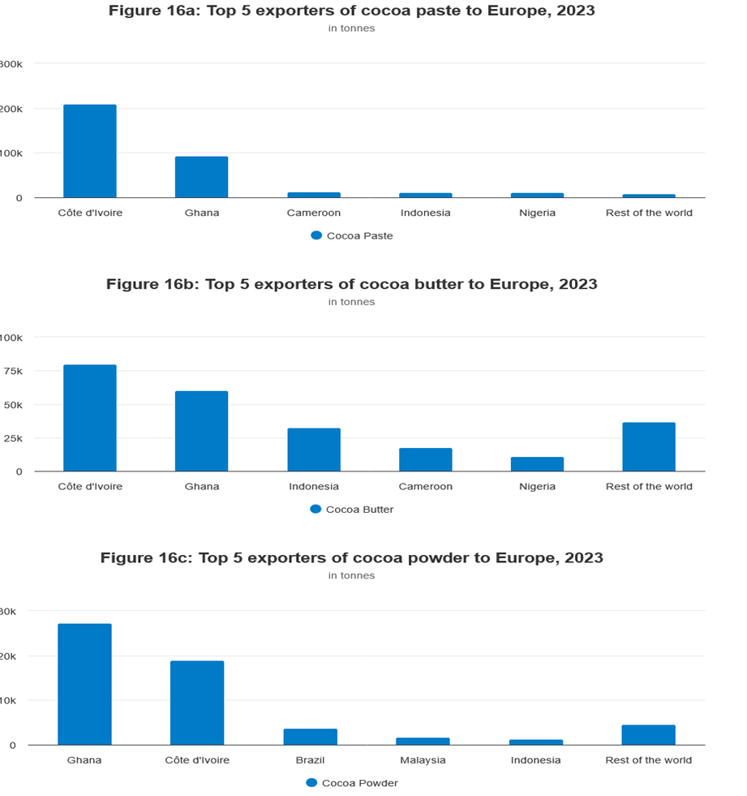

Imagine a chocolate bar in a Paris store—its cocoa comes from Ghana, but the major profits do not remain here. This is the nature of a Global Value Chain (GVC): a system where countries divide the work of producing goods—growing, building, and selling—across borders. Ghana participates in this system by exporting raw cocoa beans worldwide, but we are missing a larger opportunity. What if we processed these beans into powder or chocolate bars ourselves, capturing more of the wealth flowing through these chains? (See Figure 1.)
Cocoa is Ghana’s backbone—approximately 1.047 million tonnes were produced in 2021, supplying major brands like Barry Callebaut (Switzerland), Cargill (USA), and Olam (Singapore). However, we export it raw, earning minimal returns, while others transform it into chocolate and gain significant profits. Contrast this with Vietnam, where imported phone parts are assembled into finished gadgets in busy factories, creating jobs and reducing poverty. Towns like Thai Nguyen witnessed rising employment and shrinking hardship. Ghana could chart a similar course. Imagine Kumasi’s cocoa farmers grinding beans into powder, or women in Tamale transforming shea nuts into butter for beauty products on New York shelves. This is how GVCs operate: starting with local resources and plugging into global markets. (See Figure 2.)
The essential point is that achieving this shift requires effort. GVCs depend on efficient infrastructure, such as roads and ports. Currently, a truck transporting cocoa from Kumasi to Tema port can spend days mired in traffic or bureaucratic delays. Addressing these issues would enable faster exports and attract more international buyers. Training is also crucial—workers need skills to operate machinery, pack goods, and conduct quality tests. Take shea butter production as an example: although women traditionally process it by hand, with basic tools and proper contracts—perhaps with companies like L’Oréal—we could package and export it ourselves. This would create more jobs, moving young people from fields to workshops and helping families secure better futures. (See Figure 3.)
The evidence is compelling. Countries that thrive in GVCs, such as Vietnam, have seen rising wages and declining poverty. Ghana remains stuck in a “commodities GVC,” where we sell raw materials cheaply and miss out on added value. Processing cocoa into powder or shea into creams retains more wealth locally. However, success requires more than just factories. We need improved customs processes—faster border crossings—and stable regulatory environments to attract investors. Vietnam invested heavily in roads and workforce training to leap forward. Ghana possesses the raw materials—cocoa, shea, and even potential in textiles and technology. Imagine cocoa leaving Accra not as raw beans, but as finished chocolate bars destined for European markets. That is the shift in the GVC we must pursue. (See Figure 4.)
Why does this matter? GVCs are not merely business strategies—they represent Ghana’s future. More jobs mean bustling markets in Accra and Tamale. More trade means we set the agenda rather than following others. Ghana is already recognized globally for its high-quality cocoa, yet we remain at the bottom of the value chain. Moving upward requires better infrastructure, a skilled workforce, and bold initiatives. Other nations have done it—Vietnam with electronics, Thailand with automobiles. We hold immense potential in our cocoa beans and shea nuts.
So, what comes next? Could Ghanaian shea butter shine in global beauty markets? Could high-tech parts emerge from Takoradi? The future is ours to shape.